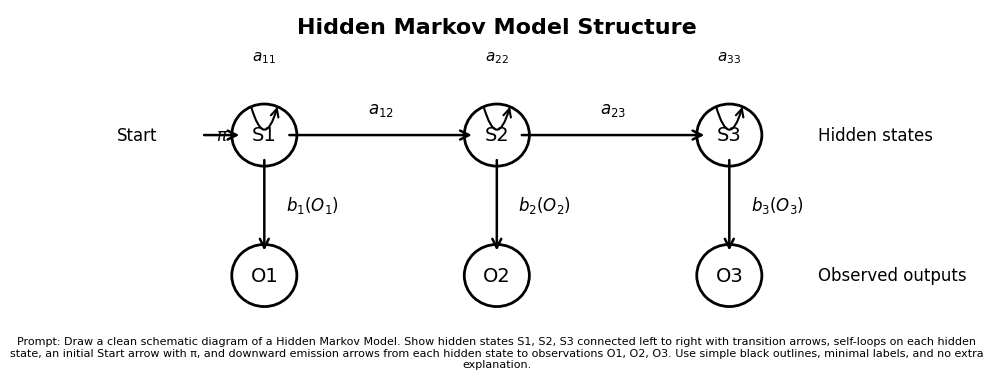
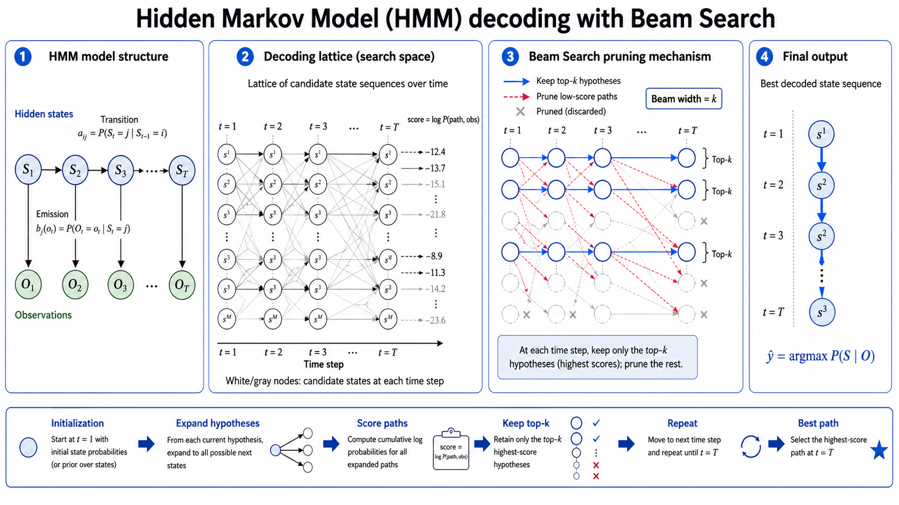

HMM的含义以及在语音识别中的应用¶
HMM全称为Hidden Markov Model，其中markov部分是描述有依赖关系的离散随机过程的，称为markov chain。
Markov Chain¶
依赖关系为一个节点只依赖前置节点，依赖的数量称为阶，例如\(S_{t+1}\)只依赖\(s_{t}\)，则称为1阶markov chain。概率描述为：\(P(S_{t+1}=x∣S_t,S_{t−1},…,S_1)=P(S_{t+1}=s∣S_t)\)，其中\(t\)是时间步，\(S_{t}\)是在时刻\(t\)的随机变量，s是随机变量的取值。

描述一个1阶markov chain，需要的信息是转移概率：在一个状态下转移到另一个状态的概率。公式描述：\(p_{ij}=P(S_{t+1}=j∣S_t=i)\)，当有n个离散状态时，所有状态之间的转移矩阵如下： $$ P = \begin{pmatrix} p_{11} & p_{12} & \cdots & p_{1n} \ p_{21} & p_{22} & \cdots & p_{2n} \ \vdots & \vdots & \ddots & \vdots \ p_{n1} & p_{n2} & \cdots & p_{nn} \end{pmatrix} $$ 当这个转移概率矩阵的所有值都知道的情况下，这个markov chain就确定了。(转移概率和时间无关的特性叫做时间齐次性。) 随机过程中确定markov chain的方式一般是统计，其中\(N_{ij}\)表示从状态\(i\)转移到状态\(j\)的次数。 \(\(\hat{p}_{ij} = \frac{N_{ij}}{\sum_{k} N_{ik}} = \frac{N_{ij}}{N_i}\)\)
Hidden¶
接下来讨论hidden的含义，隐指的是刚才描述的\(S_i\)是无法直接观察的，可以观察的状态用\(O_i\)表示。\(O_i\)是\(S_i\)的条件随机变量。公式表达\(b_j(k) = P(O_t = k \mid S_t = j)\)，这个概率称为发射概率，发射概率矩阵如下： $$ B = \begin{pmatrix} b_1(1) & b_1(2) & \cdots & b_1(M) \ b_2(1) & b_2(2) & \cdots & b_2(M) \ \vdots & \vdots & \ddots & \vdots \ b_N(1) & b_N(2) & \cdots & b_N(M) \end{pmatrix} $$ 与Markov Chain的确定一样，当发射概率矩阵的所有值都知道，发射过程也就确定了。发射概率的确定一般也是基于统计： \(\(\hat{b}_j(k) = \frac{\sum_{t=1}^{T} \mathbf{1}[S_t = j,\ O_t = k]} {\sum_{t=1}^{T} \mathbf{1}[S_t = j]}\)\)
为什么会有Hidden Markov Model
在实际应用中，我们希望了解的过程中的重要变量很多的确是无法观察的。例如人的情绪，取值定为(高兴，悲伤，愤怒)。我们想要知道一个人的情绪，往往是从行为推断的，行为空间定为(看电影，睡觉，唱歌)。在不同的情绪下发生不同行为的概率不同。当我们对人的情绪感兴趣，需要从行为出发进行推断的时候，其实就是一个HMM，隐变量就是情绪，观测变量就是行为。
HMM的学习过程¶
上面分别讲了Markov Chain的转移概率矩阵和隐变量的发射概率矩阵的确定过程。但是HMM的学习并不像上面两个概率矩阵单独学习那样简单，因为转移概率矩阵和发射概率矩阵是耦合在一起的。直接从观测变量的分布同时学习两个概率矩阵是不行的，需要借助一些方法（EM算法）。EM算法分为E-step和M-step，现在先强行给出E-step和M-step需要估计的参数。E-step估计的参数是在当前观测序列下每个时刻隐状态的分布概率，M-step估计的参数就是HMM的参数（转移概率矩阵和发射概率矩阵）。其实E-step的估计参数的选择是自然的，因为我们从Markov Chain添加发射转换到HMM的过程中，就是把HMM的状态变得未知，两个概率矩阵的估计在HMM状态已知的情况下是相当简单的，也即上文的两个估计公式。问题转换为E-step的参数的估计是否合理以及是否可以计算。后面的推导将说明这个估计的有效性和合理性。
接下来介绍HMM的学习算法：Baum-Welch算法。
辅助变量的定义和计算过程¶
考虑时刻的数量\(T\)和状态的数量\(N\), 路径的个数是指数的，也即\(N^T\)个，这个计算代价几乎是无法接受的。而Baum-Welch算法是使用动态规划的思路，降低计算量。因为每个时刻\(t\)的状态\(S_t\)的实际上只是由前置状态转移而来的，因此无需记录所有的可能路径，因此如果考虑特定时刻\(t\)的状态分布，只需对\(t-1\)时刻的所有状态转移到\(t\)时刻的状态求和即可。但是还需要把转移的隐状态和观测状态结合起来。因此定义如下辅助变量：
\(\(\alpha_{t}(j) = \left[\sum_{i=1}^{N} \alpha_{t-1}(i)\, A_{ij}\right] B_{j,o_{t}}\)\)
\(\(\beta_t(i) = \sum_{j=1}^{N} A_{ij}\, B_{j,o_{t+1}}\, \beta_{t+1}(j)\)\)
现在对辅助变量的含义做精确的解释：第一个辅助变量为前向过程的辅助变量，其含义是在截至到\(t\)时刻，给定从\(0\)到\(t\)时刻的所有观测变量的情况下，\(t\)时刻的隐变量是\(j\)并且观测变量是\(o\)的联合概率。第二个变量的含义类似但是也有区别，注意到这个公式不包含\(t\)时刻的发射概率，所以不是\(t\)时刻隐状态为\(j\)，观测变量为\(o\)的联合概率，实际上这个概率是\(t\)时刻状态为\(j\)时，后续观测序列的条件概率。我们分别把两个概率的含义对应的公式罗列如下，方便理解这种前后向的不对称性。但是，在后续的推导中，我们也将理解这种不对称性带来的计算上的便利。
\(\(\alpha_t(i)=P(o_1,\dots,o_t,\ q_t=i\mid \theta)\)\)
\(\(\beta_t(i)=P(o_{t+1:T}\mid q_t=i)\)\)
把两个变量乘起来，得到：
\(\(\alpha_t(i)\beta_t(i)=P(o_{1:t}, q_t=i)P(o_{t+1:T}\mid q_t=i)\)\)
可以看到\(\alpha_t\)和\(\beta_t\)的不对称性正好可以合并成如下联合概率：
\(\(\alpha_t(i)\beta_t(i)=P(o_{1:T},q_t=i)\)\)
这个概率的含义是在\(t\)时刻隐状态是\(j\)和观测序列是当前序列的联合概率。
但是我们想要的是在当前观测序列确定的情况下，\(t\)时刻各个状态的后验概率，时刻给定后，各个状态的后验概率需要满足概率和为1的要求，联合概率显然不满足，因此做归一化：
\(\(\gamma_t(i)=\frac{\alpha_t(i)\beta_t(i)}{\sum_j \alpha_t(j)\beta_t(j)}=P(q_t=i\mid O)\)\)
这个就是Baum-Welch算法需要隐状态的后验估计。
现在解释下前后向计算这样设置的原因以及为什么要相乘：\(\alpha_t\)和\(\beta_t\)的计算可以从递推公式发现是满足动态规划的子结构性质的，并且计算复杂度为\(O(TN^2)\)，相乘的原因是乘完后的联合概率是考虑了观测序列整体的，对比之下，\(\alpha_t\)是到\(t\)时刻的观测序列和状态\(i\)的联合概率。显然在整体观测序列已知的条件下，求解概率使用全观测序列的信息是更合理的。继续对比解码流程中只用前\(t\)时刻的做法，原因是自回归的解码过程是不知道后续的状态的，所以使用当前观测时刻和之前的状态。
接下来定义辅助计算发射概率的辅助变量：
\(\(\xi_t(i,j)=P(q_t=i,q_{t+1}=j\mid O,\theta)\)\)
同样的，因为上述辅助变量是个后验概率，含义为在HMM参数已知和观测序列确定时，在\(t\)时刻为状态\(i\)和\(t+1\)时刻为状态\(j\)的联合概率。计算公式如下：
\(\(\xi_t(i,j)=\frac{\alpha_t(i)a_{ij}b_j(o_{t+1})\beta_{t+1}(j)}{P(O\mid\theta)}\)\)
对该公式再做一点解释：因为是概率，所以有分母来负责归一化。其次注意到分子有发射概率\(b_j(o_{t+1})\)，这是前后向不对称的又一次体现，因为后向过程的变量\(\beta_{t+1}\)不负责\(t+1\)时刻（该时刻的状态是\(\beta_{t+1}\)作为条件概率的条件），所以由该公式负责结合发射概率。
基于辅助变量的HMM参数学习过程¶
以上辅助变量的确定有一个前提，那就是HMM的两个参数（转移概率矩阵和发射概率矩阵）已知。但是因为我们使用的是EM算法，其实上步对应的是E-step，当辅助变量确定下来，又计算HMM参数的过程对应EM算法的M-step。这步是相当简单的，只需要把离散计算过程推广到概率计算过程就可以了，我们称为从hard计算到soft计算的转换。
回顾普通的转移概率估计：
\(\(a_{ij}=\frac{\text{从 } i \text{ 转移到 } j \text{ 的次数}}{\text{从 } i \text{ 出发的总次数}}\)\)
基于辅助变量的转移概率估计：
\(\(a_{ij}^{new}=\frac{\sum_{t=1}^{T-1}\xi_t(i,j)}{\sum_{t=1}^{T-1}\gamma_t(i)}\)\)
对上式做下解释：\(\gamma_t(i)\)表示\(t\)时刻状态\(i\)的后验概率，可以是小数，是所谓的soft值，而普通的估计在一个序列中，特定时刻的状态是确定的。\(\xi_t(i,j)\)是\(t\)时刻为状态\(i\)和\(t+1\)时刻为状态\(j\)的联合概率，也是soft值。
注意到我们在时间维度上做了求和，这是时间齐次性的体现（转移只和状态有关，和时间无关）。
接下来估计发射概率：
\(\(b_i(k)^{new}=\frac{\sum_{t:o_t=k}\gamma_t(i)}{\sum_{t=1}^{T}\gamma_t(i)}\)\)
对上式做下解释：因为观测序列是已知的，所以估计与状态\(k\)有关的发射概率时，分母只使用观测状态为\(k\)的时间步的\(\gamma_t(i)\)的概率。
解码¶
逐帧的贪心解码¶
解码过程以贪心解码为例。其实就是一个Baum-Welch算法的前向过程的简化。回顾前向过程的计算，假设条件是HMM的转移概率矩阵和发射概率矩阵已知，在解码过程中，估计已经结束，HMM确实已知。 但是解码和前向过程略有不同，前向是为了建立观测序列的似然，解码是为了确定隐状态。所以前向在估计似然时的求和，替换成取最大值即可，最大值对应的状态就是估计的隐状态。 \(\(\delta_t(j)=b_j(o_t)\max_i\left[\delta_{t-1}(i)a_{ij}\right]\)\) 这种逐帧贪心的解码是最简单的，但是却不一定是最优的，因为每步只考虑当前帧的取值，没有结合已经解码的前置序列。接下来我们从序列整体概率最大的目标出发，介绍Viterbi解码过程。
Viterbi解码¶
和逐帧的贪心解码不同，Viterbi不在当前时刻直接选出解码结果，而是记录当前帧的每个状态的概率值，以及从前一帧的哪个状态转移过来的概率值是最大的，这个信息是可以回溯的，当最后一帧计算完成后，可以知道最后一帧的哪个状态是概率最大的，然后用记录的回溯信息反向把每帧的隐状态推测出来。这就是Viterbi解码的过程。当状态空间很大的时候，解码过程需要记录的数据和计算量很大，因此可以做个折衷，只保留部分概率较高的状态，允许一定的误差来降低计算和内存开销，这就是接下来要介绍的Beam Search解码。
Beam Search¶
Beam Search的出发点在上面介绍过了，这里只做补充。Beam Search约定一个数值\(N\)，这个值的含义是在解码过程中只保留N个候选，加快解码速度。
